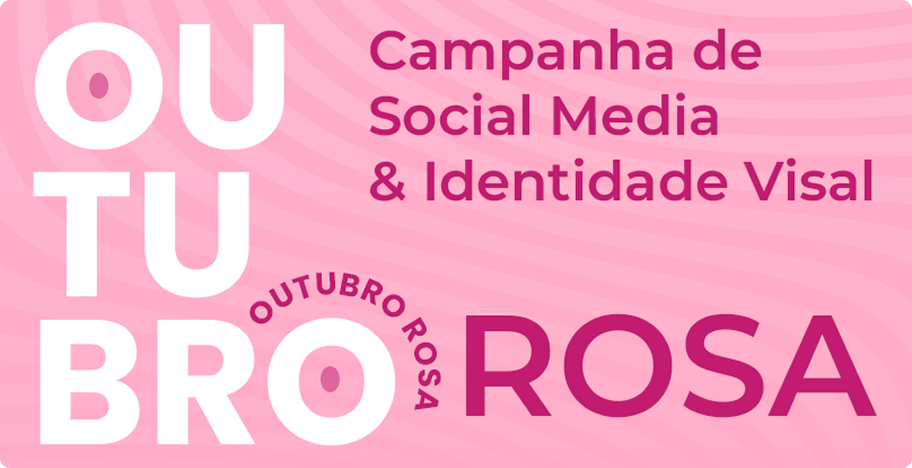
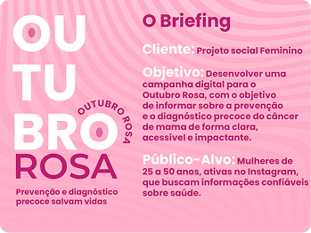
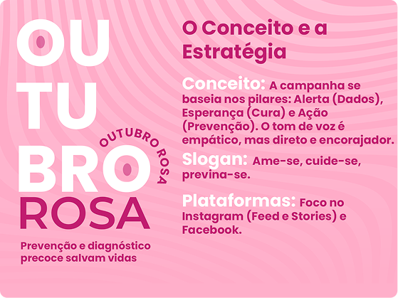
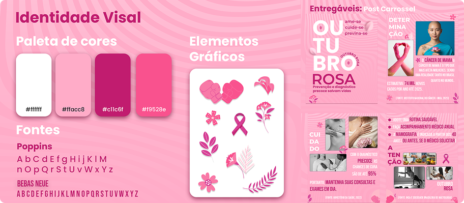
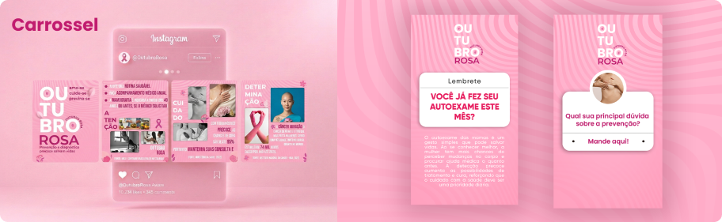

Projeto visual de conscientização — comunicação que informa, engaja e convoca à ação com sensibilidade e consistência.

Campanha desenvolvida para um projeto social que tinha como objetivo informar sobre a prevenção e diagnóstico precoce do câncer de mama, de forma clara, acessível e impactante.
O público-alvo era mulheres de todas as idades, com foco em aumentar a conscientização sobre a importância do diagnóstico precoce. A campanha foi veiculada principalmente nas redes sociais (Instagram, Facebook) e em materiais impressos.

Descreva o desafio de comunicação — como fazer o Outubro Rosa se destacar, comunicar com cuidado um tema sensível e gerar engajamento real?
Descreva o desafio de falar sobre saúde feminina com cuidado, sem ser genérico ou panfletário.
Descreva o desafio de criar um sistema visual coerente para múltiplas peças ao longo do mês.
Descreva o desafio de ir além da estética e gerar uma comunicação que de fato mova as pessoas.
Explique o seu processo — como você construiu o conceito criativo, definiu o sistema visual e garantiu consistência entre as peças.
Como você chegou ao fio condutor da campanha — a ideia que une todas as peças.
Definição da paleta, tipografia, elementos gráficos e grid para garantir coerência.
Como você planejou e organizou a produção das peças ao longo do mês.
Como você garantiu qualidade e consistência em cada peça antes da publicação.

Apresente as peças criadas. Mostre a variedade de formatos — feed, stories, banner — e explique as decisões visuais por trás do conjunto.

Explique como o sistema de cores, tipografia e elementos gráficos garante que cada peça seja reconhecível como parte da mesma campanha.
Explique como o design sustenta uma mensagem de conscientização com cuidado e sem apelação.

Descreva o impacto da campanha — engajamento, alcance, feedback recebido ou o que a comunicação proporcionou para o público.
peças produzidas no mês
pessoas alcançadas
aumento de engajamento vs. média
Comunicação de causa exige muito mais do designer — não basta ser bonito, precisa ser verdadeiro.
Um sistema visual bem definido desde o início economiza tempo e garante qualidade mesmo com volume alto de peças.
Descreva o que você faria diferente — em conceito, planejamento ou execução.